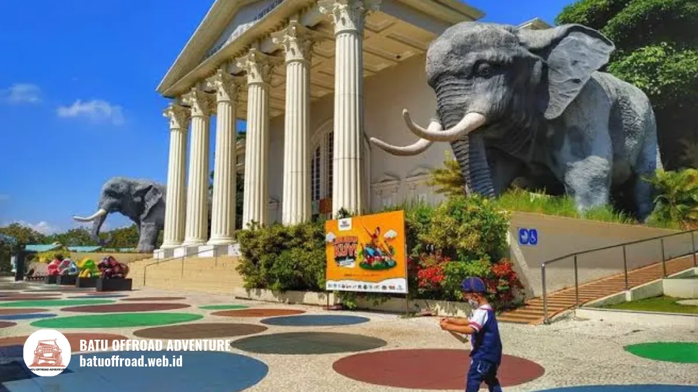

Wisata Dekat Coban Putri dari Jatim Park 2 sampai Eco Active
Batu Offroad merangkum destinasi yang bisa digabung dengan kegiatan offroad Coban Putri Batu, dari Jatim Park 2 sampai Eco Active Park. Jam buka dan kisaran harga tiket berasal dari sumber publik, dan sebaiknya dicek ulang sebelum berkunjung.
Destinasi Dekat yang Bisa Digabung
Destinasi yang bisa digabung dengan kegiatan offroad antara lain Jatim Park 2 dan Eco Active Park. Menurut Kompas TV (2023), Jatim Park 2 buka pukul 09.30 sampai 17.30 WIB, dan Eco Green Park (nama lama Eco Active Park menurut sumber tersebut) buka pukul 08.30 sampai 16.30 WIB.
Jarak dari Coban Putri dapat dilihat di peta saat merencanakan rute perjalanan Anda melalui panduan rute ke Coban Putri dari Alun-alun Batu, Bandara, dan Stasiun Malang. Untuk jadwal gabungan, kirim tanggal dan jumlah orang ke WhatsApp +62 812-3398-9707.
Destinasi Lengkap di Sekitar Coban Putri
Jatim Park 2
Jatim Park 2 berlokasi di Jalan Oro-Oro Ombo No. 9, Batu, dan dikenal dengan Batu Secret Zoo dan Museum Satwa. Menurut Kompas TV (2023), kawasan ini berjarak sekitar 1 km dari Jatim Park 1. Jam buka pukul 09.30 sampai 17.30 WIB.
Kawasan ini menyediakan musala dan baby care room bagi pengunjung keluarga (detikJatim). Cocok untuk keluarga dengan anak kecil dan rombongan sekolah. Durasi kunjungan tergantung minat dan jumlah wahana yang dicoba.
Jatim Park 1
Jatim Park 1 berada sekitar 1 km dari Jatim Park 2 dan memiliki beragam wahana edukatif. Menurut Metro TV (Desember 2025), semua destinasi Jatim Park, termasuk Jatim Park 1, buka setiap hari pukul 08.30 sampai 16.30 WIB dengan penukaran tiket terakhir pukul 15.00 WIB.
Harga tiket reguler sekitar Rp115.000 sampai Rp140.000, dan paket terusan dengan Museum Angkut sekitar Rp150.000 pada hari biasa. Harga dapat berubah, sehingga pengunjung perlu memeriksa situs resmi sebelum berkunjung.
Eco Active Park
Eco Active Park adalah area aktivitas luar ruang di Batu. Kompas TV (2023) menyebut area ini sebagai Eco Green Park dengan jam buka pukul 08.30 sampai 16.30 WIB.
Nama dan jam buka terbaru perlu dikonfirmasi. Cocok untuk komunitas dan kantor yang menginginkan aktivitas luar ruang.

Patung gajah Jatim Park dekat Coban Putri.
Museum Angkut
Museum Angkut berlokasi di Jalan Terusan Sultan Agung No. 2, Ngaglik, Batu. Museum ini menampilkan koleksi kendaraan dari berbagai era dan dikenal dengan Pasar Apung.
Jam operasional menurut Indonesia.travel adalah pukul 12.00 sampai 20.00 WIB, dengan penukaran tiket terakhir pukul 19.00 WIB. Sumber lain menyebut jam buka akhir pekan dimulai pukul 11.00 WIB, sehingga jam terbaru perlu dicek.
Menurut Goodnews from Indonesia (2022), museum ini sekitar tujuh menit berkendara dari Jatim Park 1. Harga tiket reguler sekitar Rp110.000 menurut Metro TV (Desember 2025). Cocok untuk keluarga, pelajar, dan komunitas pecinta kendaraan.
Selecta
Selecta adalah taman rekreasi keluarga di Batu dengan wahana air dan area taman. Menurut CIMB Niaga, jam operasional Selecta setiap hari pukul 07.00 sampai 17.00 WIB dengan tiket reguler sekitar Rp50.000.
Pada Januari 2026, Selecta juga menghadirkan wahana mandi busa pada jam tertentu (Jatim Times). Cocok untuk keluarga dan rombongan yang ingin wisata santai.
Batu Ekonomis Park
Batu Ekonomis Park berada di bawah naungan Jawa Timur Park Group dan beroperasi pukul 08.30 sampai 16.30 WIB (Malang Post, Oktober 2026). Cocok untuk keluarga dan rombongan yang ingin tambahan kunjungan.
Tabel Perbandingan Destinasi
Berikut ringkasan perbandingan destinasi wisata populer di sekitar Coban Putri yang dapat digabungkan dalam itinerary perjalanan:
| Destinasi | Jarak dari Coban Putri | Jam Buka (sumber) | Cocok untuk | Durasi Kunjungan |
|---|---|---|---|---|
| Jatim Park 2 | Cek di peta | 09.30 sampai 17.30 WIB (Kompas TV 2023) | Keluarga, sekolah | Tergantung minat |
| Jatim Park 1 | Cek di peta | 08.30 sampai 16.30 WIB (Metro TV 2025) | Keluarga, sekolah | Tergantung minat |
| Eco Active Park | Cek di peta | 08.30 sampai 16.30 WIB (Kompas TV 2023, nama lama) | Komunitas, kantor | Tergantung kegiatan |
| Museum Angkut | Cek di peta | 12.00 sampai 20.00 WIB (Indonesia.travel) | Keluarga, pelajar | Tergantung minat |
| Selecta | Cek di peta | 07.00 sampai 17.00 WIB (CIMB Niaga) | Keluarga, wisata santai | Tergantung minat |
| Batu Ekonomis Park | Cek di peta | 08.30 sampai 16.30 WIB (Malang Post 2026) | Keluarga | Tergantung minat |
Usulan Dua Urutan Kunjungan Sehari
Urutan pertama dimulai pagi dari titik kumpul, lalu menuju Coban Putri untuk offroad. Setelah makan siang, rombongan dapat melanjutkan ke Jatim Park 2 atau Museum Angkut. Jatim Park 2 dan Jatim Park 1 berdekatan, sehingga keduanya dapat digabung dalam satu sore.
Urutan kedua cocok untuk rombongan yang ingin suasana lebih santai. Dimulai dari Eco Active Park pada pagi hari, lalu menuju Coban Putri untuk offroad, dan ditutup dengan kunjungan ke Jatim Park 2 sebelum sore. Pastikan jadwal disesuaikan dengan jam buka masing-masing destinasi.
Cara Menggabungkan dengan Paket Offroad Batu Offroad
Batu Offroad menyusun urutan kegiatan berdasarkan jam, stamina peserta, dan jumlah rombongan. Untuk rombongan dengan anak kecil atau lansia, kegiatan offroad sebaiknya diletakkan pagi hari saat energi peserta masih penuh. Kunjungan ke destinasi lain dapat diletakkan setelah istirahat siang.
Untuk rombongan besar, tim kami dapat mengatur shuttle antartitik dan didukung fasilitas lengkap sesuai ulasan fasilitas Coban Putri untuk rombongan. Kirim tanggal, jumlah orang, dan destinasi yang diminati ke WhatsApp +62 812-3398-9707 agar kami dapat menyusun agenda.
Kesimpulan
Coban Putri dapat dikombinasikan dengan beberapa destinasi di Kota Batu dalam satu hari. Pilih kombinasi yang sesuai dengan stamina, usia, dan jumlah rombongan, lalu susun urutan kunjungan dengan jeda istirahat yang cukup.
Untuk rombongan keluarga, sekolah, kantor, atau komunitas, kirim tanggal dan jumlah orang ke WhatsApp +62 812-3398-9707 (wa.me/6281233989707). Tim Batu Offroad siap menyusun kegiatan yang sesuai dengan kebutuhan rombongan Anda.
FAQ
- Berapa jarak Jatim Park 2 dari Coban Putri?
Jarak dapat dilihat di peta saat merencanakan rute. Tim kami juga dapat memberi gambaran waktu tempuh saat menyusun jadwal. - Destinasi mana yang cocok untuk anak kecil?
Jatim Park 2 dan Jatim Park 1 umumnya cocok untuk keluarga dengan anak kecil. Pilihan terbaik tetap bergantung pada minat dan kondisi anak. - Apakah bisa mengunjungi dua destinasi dalam satu hari bersama
offroad?
Bisa, dengan perencanaan waktu yang baik. Tim kami dapat membantu menyusun urutan kunjungan agar tidak terlalu padat. - Apakah jam buka setiap destinasi selalu sama?
Tidak selalu. Jam buka dapat berubah pada hari libur, musim tertentu, atau saat ada promo, sehingga perlu dicek ulang sebelum berangkat.
Artikel Terkait